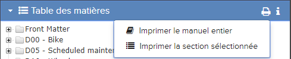

Lors de l'affichage d'une publication dans Pinpoint, la fonction
Impression
en vrac vous permet d'imprimer l'intégralité de la publication ou des pages
sélectionnées. Le sous-menu
Impression en vrac apparaît lorsque vous
cliquez sur l'icône
Impression en vrac dans la barre de la
Table des
matières.

Impression en vrac Exemple de sous-menu
Selon la configuration, deux options d'impression peuvent être disponibles:
- Imprimer le manuel entier lance une opération d'impression en
masse pour imprimer tout le contenu de la publication.
Remarque : L'optionImprimer
le manuel entier peut être complètement désactivée par l'administrateur
afin que l'option n'apparaisse pas dans l'interface. Les administrateurs peuvent
consulter le Guide de Flatirons
Pinpoint
Configuration Guide, section
"Enabling/Disabling the Print Entire Manual Option",
- Imprimer la section sélectionnée, qui requiert la sélection
d'un nœud de la table des matières, lance une impression en bloc pour imprimer tout le
contenu contenu dans le nœud sélectionné.
L'opération d'impression en bloc s'exécute en arrière-plan. L'icône
Impression en vrac devient un indicateur de progression et les
options d'impression en bloc sont désactivées jusqu'à la fin de l'opération sélectionnée.
Une fois l'opération terminée, la sortie imprimée est téléchargée sous forme de
fichier PDF.
Remarque : Le processus d'impression en bloc peut prendre un certain temps, en
fonction de l'étendue des documents à imprimer. Les performances peuvent être dégradées si
plusieurs utilisateurs effectuent simultanément des opérations d'impression en vrac. Votre
administrateur peut configurer le nombre de threads simultanés pour effectuer des opérations
d'impression en vrac. Administrateurs, reportez-vous au Flatirons Pinpoint Configuration
Guide.